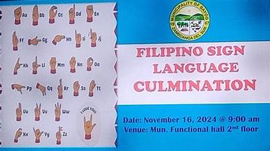
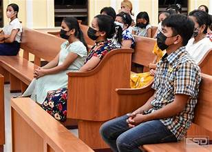
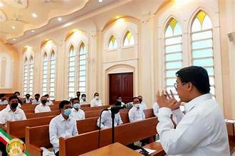
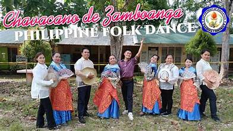
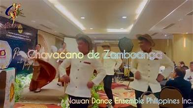
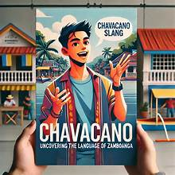

Zamboanga del Sur is a linguistically diverse province where several languages and dialects are spoken across different communities. The linguistic landscape reflects the province's multicultural history and the diverse origins of its population.
Cebuano, locally called Bisaya, is the most widely spoken language in the province. It is the mother tongue of the majority Christian settler population and serves as the common language of commerce and daily communication in most areas.
Filipino and English are the official languages used in government, education, and formal settings. English is the primary medium of instruction in schools, and both languages are used in official documents and public signage.
The Subanen speak their own language, which has multiple dialects varying by location. Subanen is spoken primarily in the upland communities and is recognized as a regional language with ongoing efforts to document and preserve it.
Chavacano, a Spanish-based creole language originally from Zamboanga City, has spread to some areas of the province through trade and migration. It is spoken by a minority of the population, particularly in areas close to Zamboanga City.
Muslim communities speak Tausug, Yakan, and Maranao, depending on their ethnic background. These languages are used within their communities and also in trade with other Muslim groups across the Zamboanga Peninsula.
Hover to fan · Hover a photo to pick


